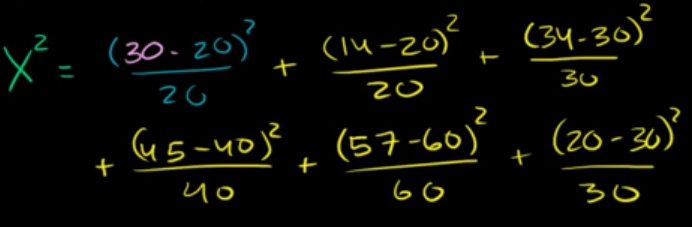

Chi Squared Goodness of Fit
A Test for Comparing Discrete Distributions
I found Sal Khan’s explanation to be as straight-forward as it was useful.
Essentially, the Chi-Squared test is used when:
- You’ve got
kdiscrete classes - Some idea of their distribution
- A number of observed values that fall into said classes
In the case of the video, we want to check if a shop owner’s approximation of visitors-by-day as a percentage of their week is accurate or not.
from IPython.display import Image
Image('../images/chi_sq_ex.png')
To solve a problem like this, we first want to rescale the total count of observed visitors (200) in a given week by the expected % value above, giving
20 20 30 40 60 30
Then, similar to how we might investigate a single normal distribution for each of these, we want to find the squared distance from observation to expected, normalized by expected.
The sum of these make up our Chi-Squared distribution, where our degrees of freedom is equal to the number of classes, minus 1– so 5.
Image('../images/chi_sq_ex2.png')
Then, like any other test, we calculate the statistic and let a computer tell us how that translates into a p-value.
The Distribution Itself
Borrowing jbstatistics’ explanation:
- If
Zis standard normal, thenZ-squaredhas aChi-squareddistribution, with one degree of freedom - If
Z1, ..., Zkare independent standard normals, thenZ1^2 + ... + Zk^2has aChi-squareddistribution withkdegrees of freedom
These distributions take on different shapes, depending on how many Z terms you mix in (and by extension value of k).
Per wikipedia:
Image('../images/chi_sq_dist.png')
Note: Each curve has:
- Mean: degrees of freedom
- Variance: degrees of freedom, squared
- Mode: degrees of freedom - 2
Chi-Squared Tests in Python
Rehashing Sal’s example above, we’ll start with an array of the expected proportions, which sum to 1
import numpy as np
exp_prop = np.array([.10, .10, .16, .20, .30, .15])Then we’ll create an array of our observed values
y_obs = np.array([30, 14, 34, 45, 57, 20])Then, we’ll create an array, y_exp, that gives us the class count we’d expect to see, given the total count of observed people
y_exp = y_obs.sum() * exp_propFinally, performing the test is as easy as invoking a clean scipy.stats function
from scipy.stats import chisquare
chisquare(f_obs=y_obs, f_exp=y_exp)Power_divergenceResult(statistic=11.033333333333333, pvalue=0.05072307251654765)